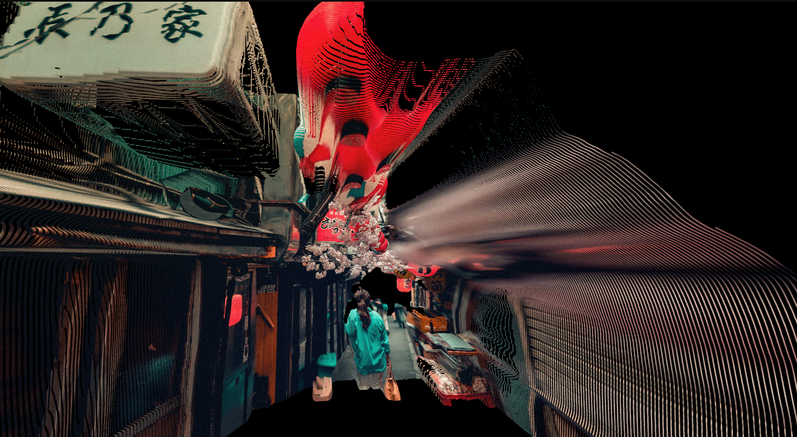

Crafting the Future of 3D Perception
I develop robust and scalable vision systems that bridge the gap between 2D imagery and real-world understanding.
My Mission
The next generation of AR and robotics depends on systems that work reliably in the wild, not just in the lab. My research in self-supervised learning is dedicated to solving this challenge. I create models that learn from vast amounts of unlabeled data. This approach makes them inherently robust, highly scalable, and well-suited for real-world applications.
UniversalPick
A robot clearing a real tote end to end, picking objects it has never seen, with no CAD models, no teleoperated demonstrations, and depth optional.
Trained entirely in simulation and demonstrated across five real runs on two different robot arms, all on the same weights.